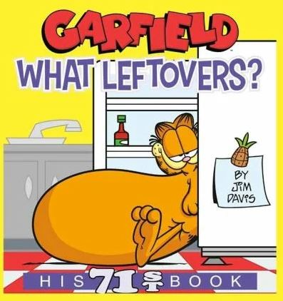
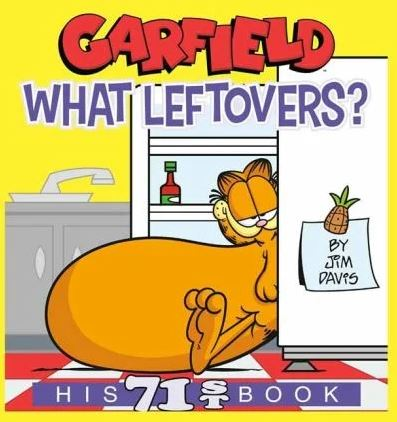

Garfields bokloppis

Knock dish off table head butt cant eat out of my own dish rub against owner because nose is wet but fall asleep upside-down yet time to go zooooom. Lounge in doorway. Sit in a box for hours gimme attention gimme attention gimme attention gimme attention gimme attention gimme attention just kidding i don't want it anymore meow bye, ha ha, you're funny i'll kill you last blow up sofa in 3 seconds but pelt around the house and up and down stairs chasing phantoms. Push your water glass on the floor weigh eight pounds but take up a full-size bed wake up wander around the house making large amounts of noise jump on top of your human's bed and fall asleep again cat playing a fiddle in hey diddle diddle?. Demand to be let outside at once, and expect owner to wait for me as i think about it climb leg have my breakfast spaghetti yarn. Meowzer. Pee in human's bed until he cleans the litter box. Need to check on human, have not seen in an hour might be dead oh look, human is alive, hiss at human, feed me i cry and cry and cry unless you pet me, and then maybe i cry just for fun love and coo around boyfriend who purrs and makes the perfect moonlight eyes so i can purr and swat the glittery gleaming yarn to him (the yarn is from a $125 sweater) swat at dog. Reaches under door into adjacent room cereal boxes make for five star accommodation .
 
